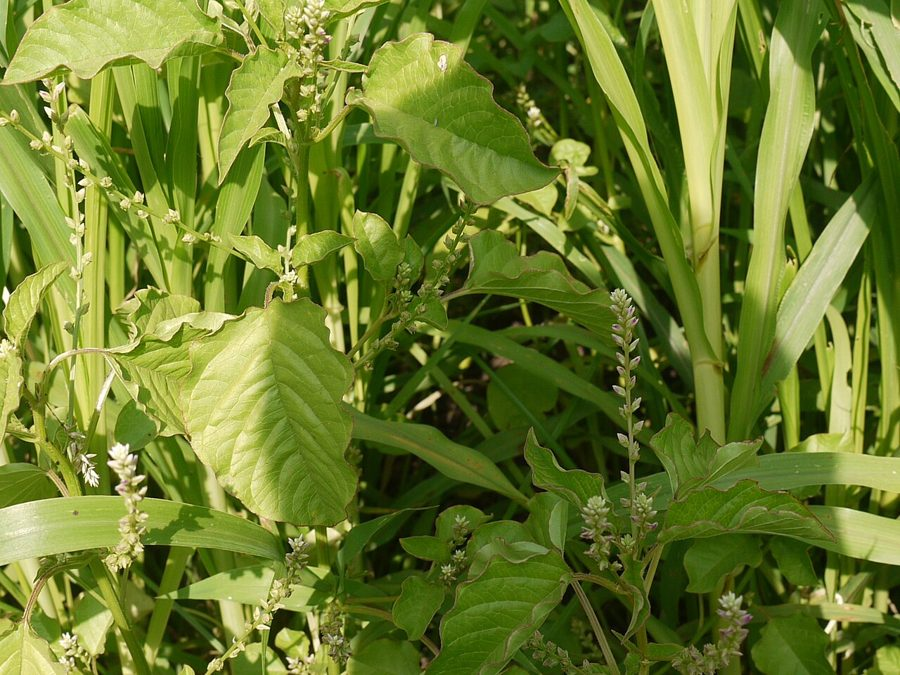

लहसुआLahsua
Digera muricata · Amaranthaceae · FLR-0210

- Scientific name वैज्ञानिक नाम
- Digera muricata (L.) Mart.
- Family कुल
- Amaranthaceae
- Hindi हिंदी
- लहसुआ
- Local names स्थानीय नाम
- lahsua, lahsuwa, lehsua, false amaranth
- Status here यहाँ की स्थिति
- native
- Movement आवागमन
- Resident, here all year
- IUCN IUCN
- not evaluated
- Review समीक्षा
- audited and independently read
When to look कब देखें
Present all year. साल भर मौजूद।
Uses and possibilities उपयोग और संभावनाएँ
Drawn from the documented uses in the profile below, where each is labelled traditional, current or a research lead. All uses →
Tell it apart from इनसे अलग पहचानें
लहसुआ / Lahsua
Digera muricata (L.) Mart. — Amaranthaceae
लहसुआ (बिसखपरा) — खेतों में, खासकर सरसों और गेहूं के बाद की बँजर ज़मीन पर, मिलने वाला एक सामान्य खरपतवार जिसे किसान कभी-कभी पशुओं को खिलाते हैं। नरम, हरी-लाल पत्तियाँ, छोटे फूल और चिपचिपे बीज। गरमागरम खेतों में नई खुदी जमीन पर पहले उगता है। बहुत कम लोग जानते हैं कि लहसुआ की ही तरह इसे भी पकाकर साग बनाया जा सकता है, और इसके बीजों को पीसकर आटे में मिलाया जा सकता है। पारंपरिक चिकित्सा में इसे ठंडी और लाभकारी माना जाता है।
Quick Identification त्वरित पहचान
| Feature | Description |
|---|---|
| Height & Habit | Prostrate or ascending, branched annual herb, 15–60 cm, stems reddish-green |
| Leaves | Alternate, obovate or spathulate, 2–6 cm, fleshy, often reddish tinge, entire margin |
| Stem | Angular, fleshy, often reddish or purplish, grooved |
| Flowers | Tiny, in compact axillary clusters or spikes, inconspicuous, greenish |
| Seeds | Small, round, dark, sticky, covered in a mucilaginous coating |
| Texture | Whole plant succulent and soft to touch |
Field tip: Look for a low, spreading weed with fleshy, reddish-tinged leaves and weak, reddish stems. The plant is soft and juicy, quite different from the tough annual weeds nearby. The leaves are simpler and less hairy than those of Bathua or Slender Amaranth. Gently bend the stem — it is succulent and does not snap like a woody weed.
Morphology आकारिकी
| Measurement | Range |
|---|---|
| Plant height | 15–60 cm |
| Leaf length | 2–6 cm |
| Leaf width | 1–3 cm |
| Flower cluster diameter | 0.3–0.5 cm |
| Seed diameter | 1.5–2 mm |
Habit: Prostrate to ascending annual herb; 15–60 cm; stems angular, fleshy, green tinged with red or purple, glabrous.
Leaves: Alternate; obovate or spathulate; 2–6 × 1–3 cm; fleshy, entire, with a slightly waxy appearance; often tinged reddish or purplish, especially toward the petiole; apex rounded; base cuneate.
Inflorescence: Axillary, compact clusters or short spikes; inconspicuous green flowers.
Flower: Minute, bisexual; 5 sepals, united at base, herbaceous; 5 stamens; 1 pistil with 2 styles.
Fruit (utricle): Enclosed by persistent sepals; 1-seeded.
Seeds: Small, 1.5–2 mm diameter, round, flattened, dark brown to black; covered with a sticky mucilaginous coating that expands when wet.
हिंदी: फूल दिखते ही नहीं हैं — बहुत छोटे, हरे। बीज काले, चिपचिपे। पूरा पौधा नरम, रसदार।
Behaviour & Ecology व्यवहार और पारिस्थितिकी
Digera muricata is a warm-season annual pioneer that germinates rapidly on freshly cultivated or disturbed soil after monsoon rains. The plant thrives in moist, fertile soils, particularly in post-harvest fallow or vegetable gardens. Growth is rapid; the plant reaches reproductive maturity in 8–10 weeks. The fleshy leaves and stems indicate adaptation to moist habitats; the plant is less drought-tolerant than other Amaranthaceae members.
The flowers are small and inconspicuous; pollination is by small insects and wind. Seeds are dispersed by water (mucilage allows temporary floating) and by adhesion to animal fur and human clothing. The plant's fleshy texture and palatability to livestock suggest it is an important fodder source in its native range.
No significant allelopathic effects are recorded. The plant does not suppress nearby crops directly; competition is mainly for moisture and nitrogen. Nitrogen-fixing nodules are recorded in some Digera species, though not definitively confirmed for D. muricata.
हिंदी: गरम मौसम की बेल, नई खुदी ज़मीन पर जल्दी उगती है। पशु खाते हैं। बीज पानी में थोड़ी देर तैरते हैं।
Life Cycle / Phenology जीवन चक्र
| Month / Season | Event |
|---|---|
| June–July | Seed germination; seedling emergence with monsoon onset |
| July–September | Rapid vegetative growth; dense canopy formation |
| August–October | Flowering and fruit initiation |
| September–November | Fruiting; seed maturation; continuous seed fall |
| December–February | Plant decline; death as temperature drops |
| March–May | Dormancy; seed bank persistence in soil |
हिंदी: जून में उगता है, अगस्त से फूल, सितंबर-नवंबर में बीज, दिसंबर में मर जाता है।
Agricultural / Human Relevance कृषि और मानव संबंध
Food use: The young leaves and tender stems of lahsua are eaten as a cooked saag (leafy vegetable) throughout eastern India. The greens are nutritious, containing vitamins A and C, though less studied than Bathua. Preparation is similar to other amaranth greens: leaves are washed, briefly boiled, and then tempered with mustard oil, garlic, and green chilli. The dish is traditionally served with maize flatbread. The use is local and not widespread in western India.
Seed use: The seeds are occasionally ground into flour and mixed with wheat flour for making bread, though this practice is becoming rare. The mucilaginous coating requires prior drying and heating.
Livestock fodder: The whole plant, when young and tender, is highly palatable to goats, sheep, and cattle. It is grazed directly in the field or collected as fodder. The fleshy nature makes it a preferred feed during dry seasons.
Weed status: A minor field weed; easily removed by hand-pulling. Does not compete strongly with crops. No herbicide resistance recorded.
Expected Locally स्थानीय रूप से अपेक्षित
Not a field record. Written from published accounts for eastern Uttar Pradesh. No confirmed local sighting yet — if you have seen it, that is what the atlas needs.
अभी तक स्थानीय पुष्टि नहीं। यह विवरण प्रकाशित स्रोतों से है, किसी अवलोकन से नहीं।
Expected on post-harvest fallows and vegetable gardens throughout Basti district during monsoon and post-monsoon (June to November). Freshly cultivated fields and irrigated bunds are places worth checking. The soft, fleshy nature and reddish tinge of stems and leaves are distinctive in the field. The first local record would be a photograph with date and location, sent to the atlas.
Distribution वितरण
Global range: Native to tropical Africa and Asia; widely distributed in the Indo-Gangetic plain.
In India: Common throughout the Indo-Gangetic plain and Deccan; less common in southern India.
In Uttar Pradesh: Widespread in agricultural districts, especially in irrigated regions.
In Basti district / eastern UP: Expected on field margins and fallows; not yet confirmed by the project.
Research Questions शोध प्रश्न
Anyone can investigate these | कोई भी इन प्रश्नों की जाँच कर सकता है
- Is lahsua grown or eaten as a green vegetable in your village, and if so, what is the traditional preparation? / आपके गाँव में लहसुए को साग के रूप में खाया जाता है? — Interview 5–10 people; document preparation.
- How many seeds are produced by a single mature lahsua plant? — Count seed clusters on 10 mature plants; calculate average.
- If lahsua seeds are stored dry for one year, what percentage still germinate? — Conduct seed viability trials.
- What is the livestock preference: do goats, sheep, and cattle graze lahsua preferentially over nearby weeds? — Observe grazing in a field with multiple weed species.
- Does lahsua growth reduce the nitrogen availability for nearby crops, or does it improve soil nitrogen content? — Compare soil samples from near and away from lahsua plants; test for nitrate. / क्या लहसुए की जड़ें मिट्टी में नाइट्रोजन बढ़ाती हैं?
Similar Species मिलती-जुलती प्रजातियाँ
| Species | How to tell apart | हिंदी |
|---|---|---|
| Slender Amaranth (Amaranthus viridis) | Leaves more finely hairy; flower spikes more prominent and elongated; less fleshy overall | पत्ती बाल-बाल वाली; स्पाइक लंबे |
| Bathua (Chenopodium album) | Leaves powdery white on underside; goosefoot-shaped; taller; winter annual | पत्ती पर पाउडर; सर्दी में |
| Amaranthus tricolor (Trigonella) | Taller, more robust; flower spikes long and prominent; less prostrate | ऊँचा, पुष्ट |
Field rule: A low, spreading, fleshy herb with soft, alternate, obovate leaves often tinged reddish, and tiny inconspicuous flowers in axillary clusters is lahsua. The whole plant is succulent and palatable to livestock.
Taxonomy & Classification वर्गीकरण
Original description. Originally described as Illecebrum muricatum by Carl Linnaeus in 1753. Later transferred to the genus Digera by Carl Martius in the 1820s. The genus name Digera is derived from the Latin digerus, referring to the digitate (finger-like) structure of some plant parts. The specific name muricata refers to the muricate (finely spiny or tuberculate) surface of the seed.
Subspecies. Monotypic — no subspecies are currently recognised.
Family and order placement. Placed in the order Caryophyllales, family Amaranthaceae. The genus Digera contains only 1–3 species, primarily in tropical Africa and Asia.
Phylogenetic notes. Digera is a small genus; D. muricata is the most widespread species in its genus, closely related to Amaranthus and other Amaranthaceae members through molecular studies.
IUCN status rationale. Not evaluated. Common and widespread; no conservation threats.
Photo Gallery फोटो गैलरी
No photos yet — add field photos to media/species/lahsua/ and run node scripts/sync_photos.js.
Photos needed आवश्यक फोटो
- [ ] Whole plant on soil (पूरा पौधा)
- [ ] Close-up of leaves and reddish stem (पत्तियाँ और लाल डंडी)
- [ ] Flower cluster (फूल का गुच्छा)
- [ ] Plant in cultivation/vegetable garden (सब्जी के बाग़ में)
References संदर्भ
- Linnaeus, C. (1753). Species Plantarum, Vol. 1, p. 191 (as Illecebrum muricatum). Laurentii Salvii, Holmiae.
- Martius, C.F.P. von. (1825). Flora Brasiliensis, Vol. 5, p. 236. Transfer to Digera.
- Hooker, J.D. (1885). Flora of British India, Vol. 4. L. Reeve & Co., London.
- Kirtikar, K.R. & Basu, B.D. (1935). Indian Medicinal Plants, Vol. 2. Lalit Mohan Basu, Allahabad.
- Botanical Survey of India. Flora of Uttar Pradesh. BSI, Kolkata.
- GBIF Occurrence Data — Digera muricata, India (2018–2026).
Source file: species/flora/crops_associated/lahsua.md